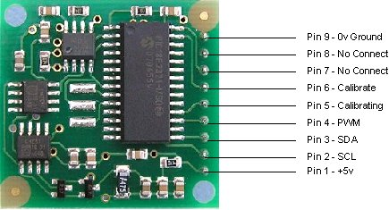
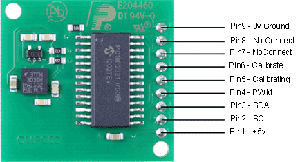
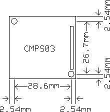

CMPS03 - Compass Module
For documentation on CMPS03
revisions prior to Rev14, click here
Earlier versions can be identified by the presence of the silver
8MHz ceramic resonator in the middle of the PCB, this has been removed on new
modules.
Rev14 was released March 2007
Overview
This compass module has been specifically designed for use in robots as an
aid to navigation. The aim was to produce a unique number to represent the
direction the robot is facing.
Connections to the compass modules
|  |  |
Connections
Pin 1, +5v. The compass module requires a 5v power supply at a nominal 25mA.
There are
two ways of getting the bearing from the module. A PWM signal is available on
pin 4, or an I2C interface is provided on pins 2,3.
Pins 2,3 are the I2C interface and can be used to get a direct readout of the bearing. If the I2C interface is not used then these pins should be pulled high (to +5v) via a couple of resistors. Around 47k is ok, the values are not at all critical.
Pin 4. The PWM signal is a pulse width modulated signal with the positive width of the pulse representing the angle. The pulse width varies from 1mS (0� ) to 36.99mS (359.9� ) � in other words 100uS/� with a +1mS offset. The signal goes low for 65mS between pulses, so the cycle time is 65mS + the pulse width - ie. 66ms-102ms. The pulse is generated by a 16 bit timer in the processor giving a 1uS resolution, however I would not recommend measuring this to anything better than 0.1� (10uS). Make sure you connect the I2C pins, SCL and SDA, to the 5v supply if you are using the PWM, as there are no pull-up resistors on these pins.
Pin 5 is used to indicate calibration is in progress (active low). You can connect an LED from this pin to +5v via a 390 ohm resistor if you wish.
Pin 6 is one of two ways to calibrate the compass, the other is writing 255 (0xFF) to the command register. Full calibration instructions are further down this page. The calibrate input has an on-board pull-up resistor and can be left unconnected after calibration.
Pins 7 and 8 are currently unused. They have on-board pull-up resistors and should be left unconnected.
Pin 9 is the 0v power supply.
I2C interface.
I2C communication protocol with the compass module is the same as popular
eeprom's such as the 24C04.
First send a start bit, the module address (0XC0) with the read/write bit low, then the register number you wish to read. This is followed by a repeated start and the module address again with the read/write bit high (0XC1). You now read one or two bytes for 8bit or 16bit registers respectively. 16bit registers are read high byte first. The compass has a 16 byte array of registers, some of which double up as 16 bit registers as follows;
| Register | Function |
| 0 | Software Revision Number, Rev14 or higher - for earlier Revisions click here |
| 1 | Compass Bearing as a byte, i.e. 0-255 for a full circle |
| 2,3 | Compass Bearing as a word, i.e. 0-3599 for a full circle, representing 0-359.9 degrees. |
| 4,5 | Internal Test - Sensor1 processed difference signal - 16 bit signed word |
| 6,7 | Internal Test - Sensor2 processed difference signal - 16 bit signed word |
| 8,9 | Internal Test - Sensor1 raw data - 16 bit signed word |
| 10,11 | Internal Test - Sensor2 raw data - 16 bit signed word |
| 12 | Unlock code1 - Unlock codes are required for I2C address change or restoring factory calibration |
| 13 | Unlock code2 |
| 14 | Unlock code3 |
| 15 | Command Register - See text. |
Register 0 is the Software revision number (14 at the time of writing). Register 1 is the bearing converted to a 0-255 value. This may be easier for some applications than 0-360 which requires two bytes. For those who require better resolution registers 2 and 3 (high byte first) are a 16 bit unsigned integer in the range 0-3599. This represents 0-359.9�. Registers 4 to 11 are internal test registers. Registers 8,9 and 10,11 contain the raw sensor data. These are the signals coming directly from the sensors, and are the starting point for all the internal calculations which produce the compass bearing. Registers 12,13 and 14 are for writing the unlock codes for I2C address change or restoring factory calibration. Register 15 is the command Register.
The I2C interface does not have any pull-up resistors on the board, these should be provided elsewhere,
most probably with the bus master. They are required on both the SCL and SDA
lines, but only once for the whole bus, not on each module. I suggest a value
of 1k8 if you are going to be working up to 400KHz and 1k2 or even 1k if you
are going up to 1MHz. The compass is designed to work at up to the standard
clock speed (SCL) of 100KHz, however the clock speed can be raised to 1MHZ
providing the following precaution is taken;
At speeds above around 160KHz the CPU cannot respond fast enough to read the I2C
data. Therefore a small delay of 50uS should be inserted either side of writing
the register address. No delays are required anywhere else in the sequence. By
doing this, I have tested the compass module up to 1.3MHz SCL clock speed.
Command Register
Register 15 is the command Register. There are very few commands -
0xC0-CE for I2c address change and 0xF2 for restoring factory calibration -
these require unlock codes, see below. Also 255 (0xFF) is the calibrate command.
There are no unlock codes required for this.
Changing the I2C address from factory default of 0xC0
With Rev14 onwards, it is now possible to change the I2C address to any of 8 addresses
0xC0, 0xC2, 0xC4, 0xC6, 0xC8, 0xCA, 0xCC or 0xCE. You
do this by writing unlock codes to registers 12,13 and 14 and the new address to register 15.
Note that the unlock codes are different to the ones which restore factory
calibration.
| Reg 12 | Reg 13 | Reg 14 | Reg 15 |
| 0xA0 | 0xAA | 0xA5 | 0xC2 |
The above example will change the address to 0xC2 and the new address will be effective immediately. Don't forget to label you CMPS03 with the new address. You can do this in one I2C transaction, setting the register address to 12 and writing the four bytes. The internal register pointer is incremented automatically.
Restoring Factory Calibration
With Rev14 onwards, it is now possible to restore the factory calibration settings. You
do this by writing unlock codes to registers 12,13 and 14 and the restore
command (0xF2) to register 15.
Note that the unlock codes are different to the ones which used for changing the
I2C address.
| Reg 12 | Reg 13 | Reg 14 | Reg 15 |
| 0x55 | 0x5A | 0xA5 | 0xF2 |
You can do this in one transaction, setting the register address to 12 and writing the four bytes. The internal register pointer is incremented automatically.
Calibration
Do not attempt this until you have your compass working! Especially if your
using the I2C interface - get that fully working first. Calibration
only needs to be done once - the calibration data is stored in EEPROM on the
PIC18F2321 chip. You do not need to re-calibrate every time the module is
powered up.
Compass module orientation to produce 0 degrees reading.
Before calibrating the compass, you must know exactly which direction is North, East, South and West. Remember these are the magnet poles, not the geographic poles. Don't guess at it. Get a magnetic needle compass and check it. When calibrating, make sure the compass is horizontal at all times with components upwards, don't tilt it. Keep all magnetic and ferrous materials away from the compass during calibration - including your wristwatch.
I2C Method
To calibrate using the I2C bus, you only have to write 255 (0xff) to
register 15, once for each of the four major compass points North, East, South
and West. The 255 is cleared internally automatically after each point is
calibrated. The compass points can be set in any order, but all four points must
be calibrated. For example
1. Set the compass module flat, pointing North. Write 255 to register 15,
Calibrating pin (pin5) goes low.
2. Set the compass module flat, pointing East. Write 255 to register 15,
3. Set the compass module flat, pointing South. Write 255 to register 15,
4. Set the compass module flat, pointing West. Write 255 to register 15,
Calibrating pin (pin5) goes high.
That's it.
Pin Method
Pin 6 is used to calibrate the compass. The calibrate input (pin 6) has an
on-board pull-up resistor and can be left unconnected after calibration. To
calibrate the compass you only have to take the calibrate pin low and then high
again for each of the four major compass points North, East, South and West. A
simple push switch wired from pin6 to 0v (Ground) is OK for this. The compass
points can be set in any order, but all four points must be calibrated. For
example
1. Set the compass module flat, pointing North. Briefly press and release the
switch, Calibrating pin (pin5) goes low.
2. Set the compass module flat, pointing East. Briefly press and release the
switch,
3. Set the compass module flat, pointing South. Briefly press and release the
switch,
4. Set the compass module flat, pointing West. Briefly press and release the
switch, Calibrating pin (pin5) goes high.
That's it.
One point which must be emphasized. The calibration must be done in exactly four steps, once for each of the four major compass points North, East, South and West. Previous versions performed part of the calibration at each step and you could actually go back and do a point again, taking 5 or more steps. Only the most recent reading from each point was used. Rev 14 onwards works differently. The 1st step (pulling pin 6 low or writing 255 to register 15) initializes internal construction registers and collects the 1st data set. The remaining steps only collect data. After the final 4th step, multiple processing stages generate and store in EEPROM a number of internal calibration values. When you perform the 1st step, Pin 5 will go low. After the 4th step it will go high again. You can connect an LED from pin 5 to 5v via a 390ohm resistor to indicate calibration is in progress. It should be high (Led off) before you start.
Rev 15 Firmware - April 2007
The default internal scan time of the CPMS03 is 100mS, or 10 updates per second
100mS is a common denominator of 50Hz/20mS (5*) and 60Hz/16.66mS (6*).
In Rev15 we have provided two further options. A 33mS scan time which is 30
updates per second, and 300mS which is 3.3 updates per second. The 33ms scan
time can be used for applications that require fast updating. The penalty is
that fewer samples can be taken in the available time, so there will be a
slightly higher variation in the output angle. A 300mS scan time will increase
the stability of the reading slightly and is suitable where the update rate is
less important. Most users will not need to change this from the 100mS default.
You change the scan time by writing unlock codes to registers 12,13 and 14 and the
new scan command to register 15. The scan commands are:
| Scan Period | Command |
| 300mS | 0x10 |
| 100mS | 0x11 |
| 33mS | 0x12 |
For example, to change to 33mS scan time, write the following to registers 12,13,14 and 15.
| Reg 12 | Reg 13 | Reg 14 | Reg 15 |
| 0x55 | 0x5A | 0xA5 | 0x12 |
The new scan period is stored in EEPROM so you only need to do it once, not every time the module is powered up. When the scan time is changed, the calibration is affected so you will need to recalibrate the compass. If you restore factory calibration then the scan time is reset to 100mS.
PCB Drilling Plan
The following diagram shows the CMPS03 PCB mounting hole positions.
